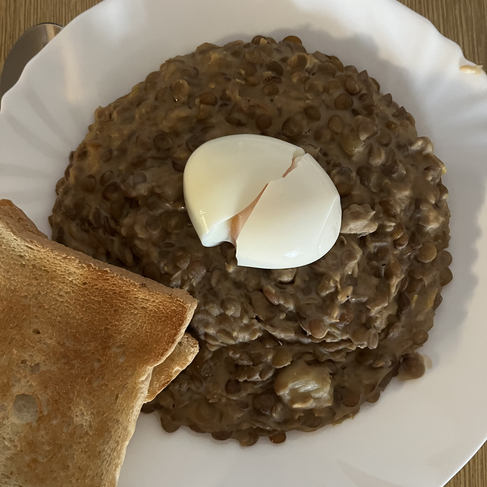

Šošovicový prívarok


Postup:
-
Šošovicu prepláchneme vodou len trošku a necháme ju vo vode ponorenú aspoň 30 minút. Môžeme ju dať do vody aj večer pred spaním, pokiaľ ideme robiť šošovicový prívarok na obed.
-
Vodu, v ktorej sa šošovica máčala dáme do väčšieho hrnca, pridáme 3 kusy bobkového listu, čierne korenie, rascu, 3 strúčiky cesnaku a varíme aspoň 20 minút.
-
Po 20 minútach varenia pridáme 1 polievkovú lyžicu octu a soľ. Hneď na to, pridáme šošovicu a varíme ju ďaľších 30 minút.
-
Zatiaľ, čo sa nám šošovica varí, v 250 mililitroch smotany na varenie, si rozmiešame 3 čajové lyžičky hladkej múky.
-
Akonáhle sa šošovica dovarila, do zmesi zo smotany a hladkej múky pridáme 2 polievkové lyžice vody, v ktorej sa šošovica varila aby sa nám smotana nezrazila.
-
Zmes prilievame pomaly do šošovice a zároveň miešame. Všetko spolu necháme variť ešte 10-15 minút.
-

Keď sa šošovicový prívarok dovarí, podľa chuti môžeme pridať ešte soľ. Pred podávaním necháme odstáť aspoň 30 minút aby sa všetky chute spojili.
Tipy a triky:
-
Šošovicový prívarok je najlepší na druhý deň, keď sa všetky chute spoja.
-
Šošovicový prívarok môžeme podávať s vajíčkom, ktoré si uvaríme na tvrdo.
-
Šošovicový prívarok môžeme podávať aj s chlebom.